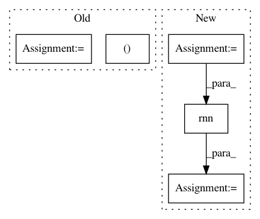

ae72ea0bfe7f7041d6f7580427fa1f69158bab7e,tests/keras/backend/backend_test.py,TestBackend,test_rnn_no_states,#TestBackend#,665
Before Change
for k in BACKENDS:
rnn_fn = rnn_step_fn(k)
inputs = k.variable(input_val)
initial_states = []
last_output, outputs, new_states = k.rnn(rnn_fn, inputs,
initial_states,
go_backwards=False,
mask=None)
After Change
_, x = parse_shape_or_val((32, timesteps, input_dim))
_, wi = parse_shape_or_val((input_dim, output_dim))
x_k = K.variable(x)
wi_k = K.variable(wi)
def rnn_fn(x_k, h_k):
assert len(h_k) == 0
y_k = K.dot(x_k, wi_k)
return y_k, []
last_y1, y1, h1 = ref_rnn(x, [wi, None, None], None,
go_backwards=False, mask=None)
last_y2, y2, h2 = K.rnn(rnn_fn, x_k, [],
go_backwards=False, mask=None)
assert len(h2) == 0
last_y2 = K.eval(last_y2)
y2 = K.eval(y2)
In pattern: SUPERPATTERN
Frequency: 4
Non-data size: 5
Instances
Project Name: keras-team/keras
Commit Name: ae72ea0bfe7f7041d6f7580427fa1f69158bab7e
Time: 2018-03-05
Author: me@taehoonlee.com
File Name: tests/keras/backend/backend_test.py
Class Name: TestBackend
Method Name: test_rnn_no_states
Project Name: keras-team/keras
Commit Name: ae72ea0bfe7f7041d6f7580427fa1f69158bab7e
Time: 2018-03-05
Author: me@taehoonlee.com
File Name: tests/keras/backend/backend_test.py
Class Name: TestBackend
Method Name: test_rnn_no_states
Project Name: NVIDIA/sentiment-discovery
Commit Name: 65c9a4857e41dcde4f5dae8a77e6cdf03953646a
Time: 2018-03-19
Author: raulp@dbcluster.nvidia.com
File Name: model/model.py
Class Name: RNNFeaturizer
Method Name: forward
Project Name: OpenNMT/OpenNMT-py
Commit Name: 7982a664d710a604a5157c542180a20c87cf4216
Time: 2017-06-02
Author: srush@seas.harvard.edu
File Name: onmt/modules/ImageEncoder.py
Class Name: ImageEncoder
Method Name: forward
Project Name: OpenNMT/OpenNMT-py
Commit Name: 7bb2fb11ad088d9aa27c9adf344f3ddd1324ced7
Time: 2017-05-31
Author: srush@seas.harvard.edu
File Name: onmt/modules/ImageEncoder.py
Class Name: ImageEncoder
Method Name: forward